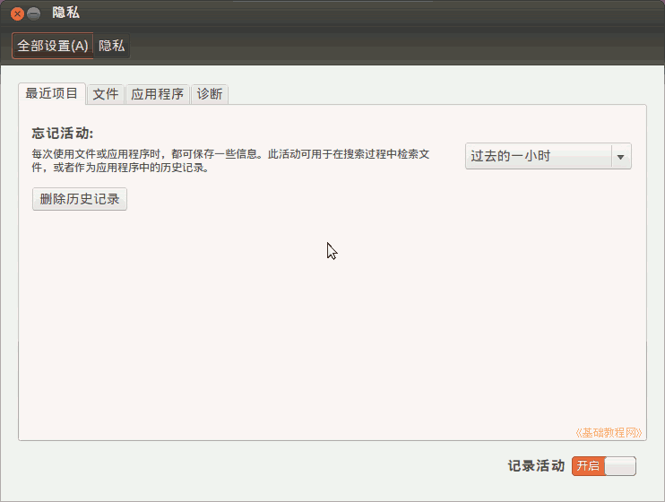
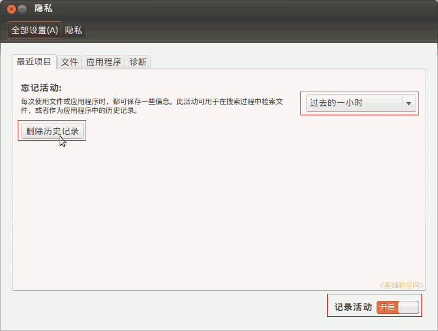
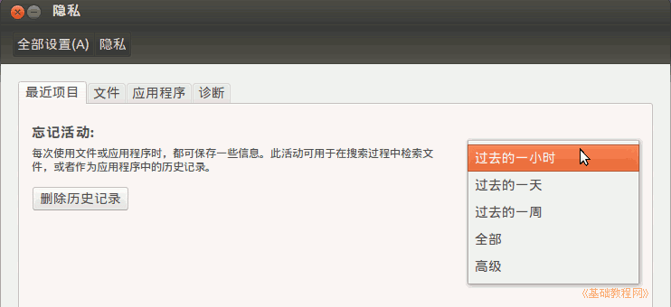
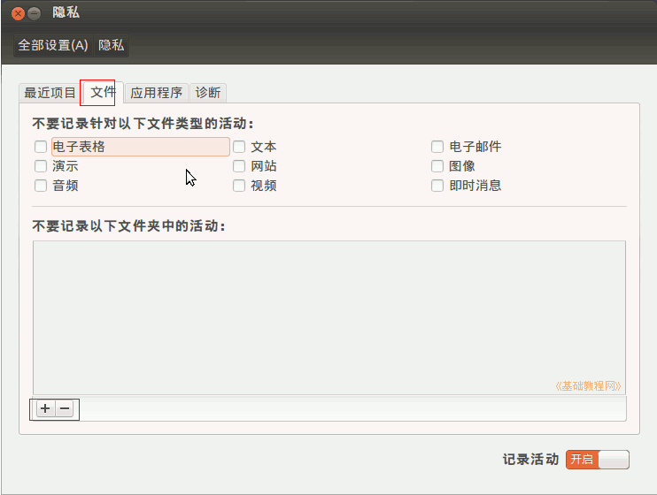
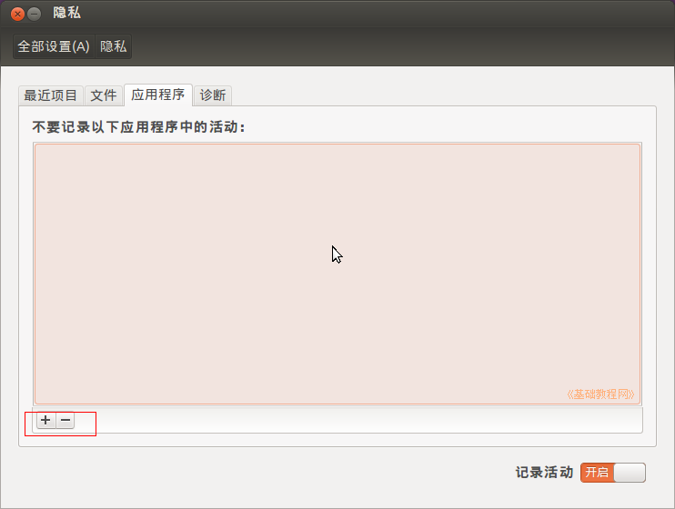
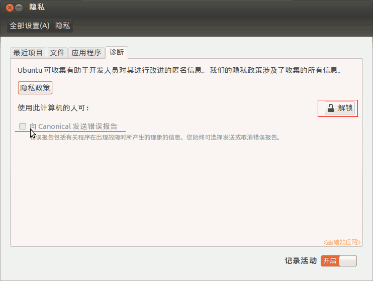
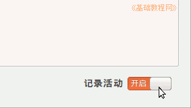

Ubuntu 入门操作指南
作者：TeliuTe 来源：基础教程网
三十一、文件浏览器 返回目录 下一课隐私中保留打开过的文件，以及浏览器中的浏览历史；
1、隐私
1）点击主按钮，在搜索中输入 privacy，打开隐私程序，或者依次点“主按钮、所有程序、过滤结果、附件、隐私”；

2）默认开启了记录操作历史，点击“删除历史记录”按钮，可以删除最近一小时的访问记录；

3）点击“过去的一小时”下拉列表，可以设置清理多长时间的历史记录；

4）点击窗口上面的第二个标签“文件”，可以勾选不记录那些类型的文件，点下边的加号可以自己添加不记录的文件夹；

5）点上边的“应用程序”标签，可以添加不记录的应用程序；

6）在“诊断”标签中，可以勾选向 Ubuntu 发送程序错误报告；

7）点第一个标签右下角的“记录活动”按钮，可以关闭记录历史，这样就不会留下操作记录

本节学习了隐私的基础知识，如果你成功地完成了练习，请继续学习下一课内容；
本教程由86团学校TeliuTe制作|著作权所有
基础教程网：http://teliute.org/
美丽的校园……
转载和引用本站内容，请保留作者和本站链接。